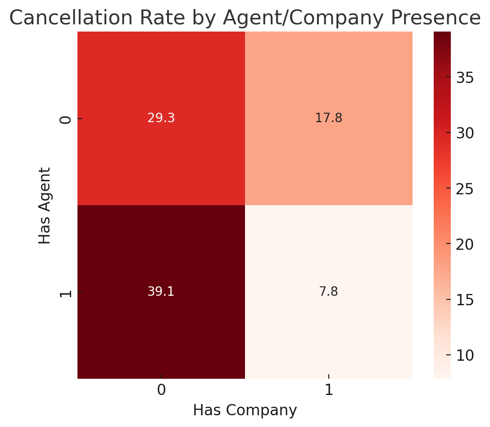
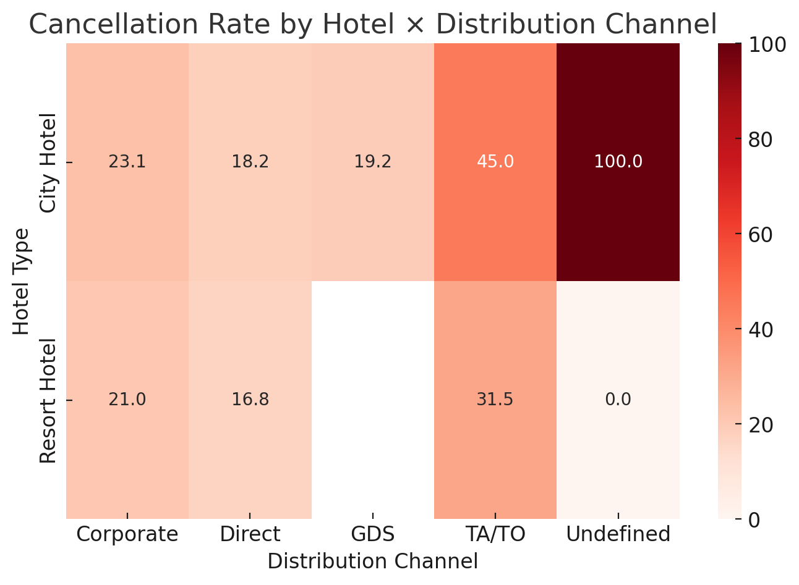
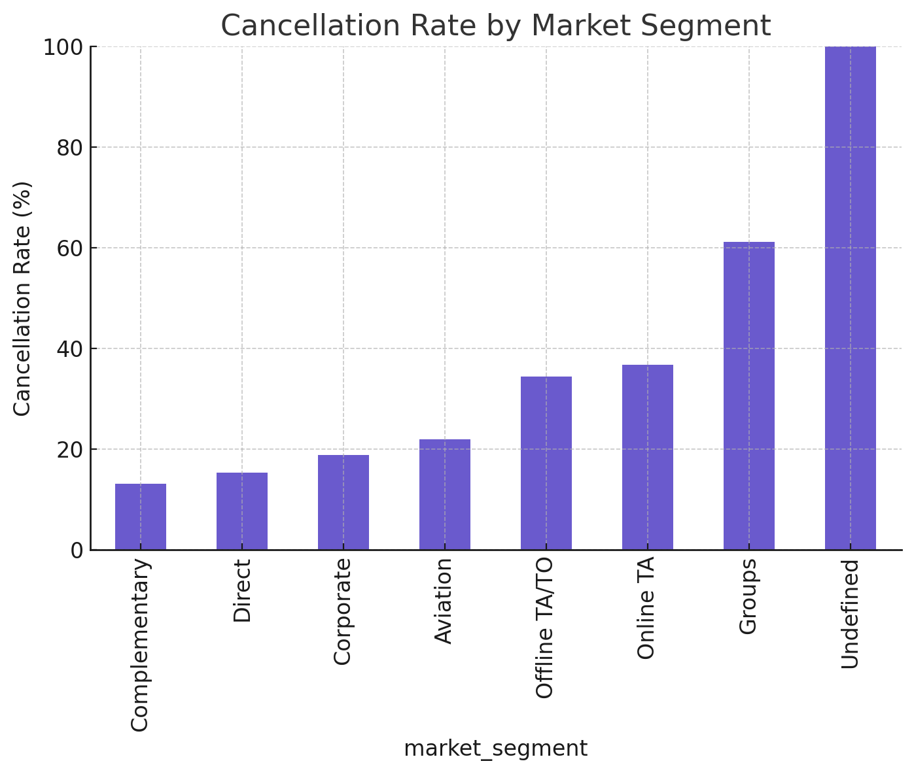
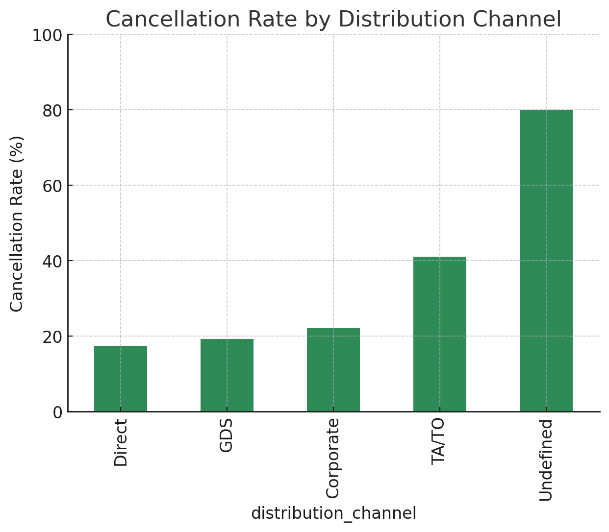

이변량 분석 ④ — 채널·세그먼트 & 체류 특성
Agent & Company
계약/중개
Agent 있음 + Company 없음
→ 취소율 높음 (≈39%)
Company 있음
→ 취소율 낮음 (≈7–18%)으로 안정적

Agent가 존재하고 Company가 없을 때 취소율이 가장 높으며, Company(계약 고객)가 있을수록 예약 유지 가능성이 커진다.
예약 채널 / 세그먼트 분석
호텔×채널
OTA·Group > Direct·Corporate — OTA/Group 측이 상대적으로 불안정

City 호텔은 TA/TO·Undefined 채널에서 높은 취소율을 보이고, Resort 호텔은 Direct·Corporate 예약에서 비교적 안정적이다.
Market Segment 취소율
Segment

세그먼트별로 Groups·Undefined는 취소율이 높고, Direct·Corporate는 낮아 안정적 수요로 분류된다.
Distribution 채널 취소율
Channel

채널 중 TA/TO는 상대적으로 취소율이 높고 Corporate·GDS·Direct는 낮다.
이전
10 / 10
다음